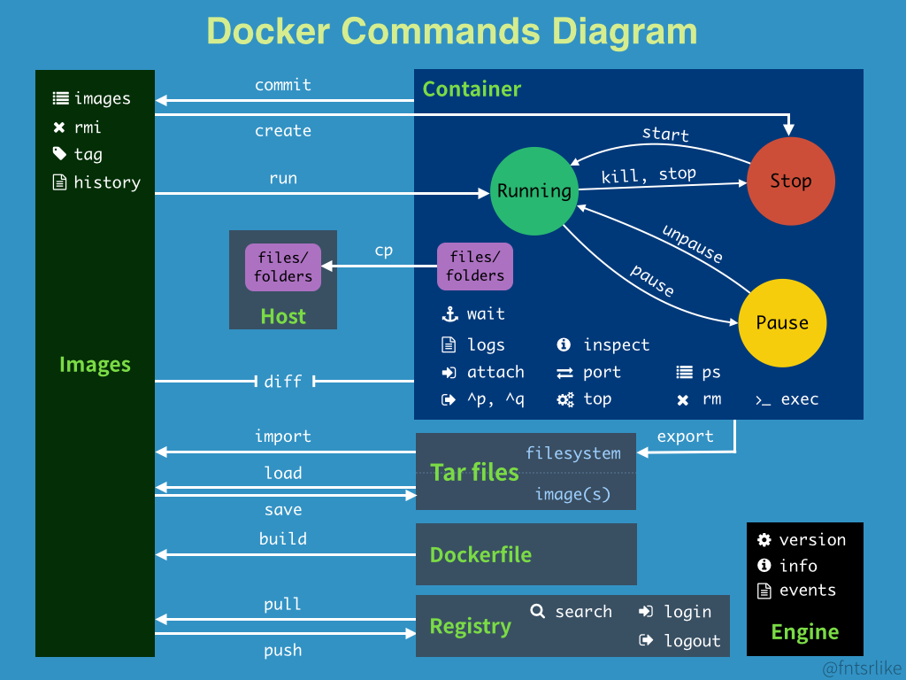
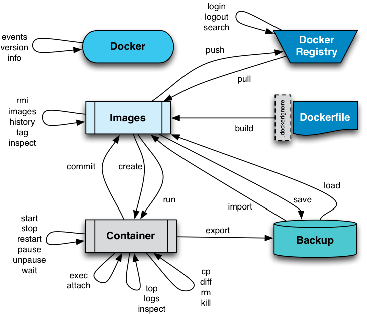

Docker 常用的指令



image
如果要搜索 image 可以上 dockerhub 找(裡面都有可以直接抓下來的指令)
docker pull image_name
# 從 Dockerhub 拉回 image
docker images
docker image ls
# 列出本地 image
docker rmi (image_name or image_id)
#移除 image
Container
# 查看本地 container
# -a：顯示所有執行中的 container。
docker ps (-a)
docker container ls (-a)
# 執行 container
docker start (container_id or container_name)
# 離開 container
exit (退出並停止容器)
# 停止 container
docker stop (container_id or container_name)
# 移除 container
docker rm (container_id or container_name)
volume
將本機的某個位置掛載至 Container 的某個位置。
# 列出本地 volume
docker volume ls
# 移除 volume
docker volume rm volume_name
# 移除所有未使用的 volume
docker volume prune
清理Docker的container，image與volume
出處: https://note.qidong.name/2017/06/26/docker-clean/
Docker的鏡像（image）、容器（container）、資料卷（volume）， 都是由daemon託管的。 因此，在需要清理時，也需要使用其自帶的手段。
清理技巧 ¶
清理所有停止運行的容器：
docker container prune
# or
docker rm $(docker ps -aq)
清理所有懸掛（<none>）鏡像：
docker image prune
# or
docker rmi $(docker images -qf "dangling=true")
清理所有無用資料卷：
docker volume prune
由於prune操作是批次刪除類的危險操作，所以會有一次確認。 如果不想輸入y<CR>來確認，可以新增-f操作。慎用！
清理停止的容器 ¶
docker rm -lv CONTAINER
-l是清理link，v是清理volume。 這裡的CONTAINER是容器的name或ID，可以是一個或多個。
參數列表：
| Name, shorthand | Default | Description |
|---|---|---|
| –force, -f | false | Force the removal of a running container (uses SIGKILL) |
| –link, -l | false | Remove the specified link |
| –volumes, -v | false | Remove the volumes associated with the container |
清理所有停止的容器 ¶
通過docker ps可以查詢當前運行的容器資訊。 而通過docker ps -a，可以查詢所有的容器資訊，包括已停止的。
在需要清理所有已停止的容器時，通常利用shell的特性，組合一下就好。
docker rm $(docker ps -aq)
其中，ps的-q，是隻輸出容器ID，方便作為參數讓rm使用。 假如給rm指定-f，則可以清理所有容器，包括正在運行的。
這條組合命令，等價於另一條命令：
docker container prune
container子命令，下面包含了所有和容器相關的子命令。 包括docker ps，等價於docker container ps或docker container ls。 其餘還有start、stop、kill、cp等，一級子命令相當於二級子命令在外面的alias。 而prune則是特別提供的清理命令，這在其它的管理命令裡還可以看到，比如image、volume。
按需批次清理容器 ¶
清除所有已停止的容器，是比較常用的清理。 但有時會需要做一些特殊過濾。
這時就需要使用docker ps --filter。
比如，顯示所有返回值為0，即正常退出的容器：
docker ps -a --filter 'exited=0'
同理，可以得到其它非正常退出的容器。
目前支援的過濾器有：
- id (container’s id)
- label (
label=<key>orlabel=<key>=<value>)- name (container’s name)
- exited (int - the code of exited containers. Only useful with –all)
- status (
created|restarting|running|removing|paused|exited|dead)- ancestor (
<image-name>[:<tag>],<image id>or<image@digest>) - filters containers that were created from the given image or a descendant.- before (container’s id or name) - filters containers created before given id or name
- since (container’s id or name) - filters containers created since given id or name
- isolation (
default|process|hyperv) (Windows daemon only)- volume (volume name or mount point) - filters containers that mount volumes.
- network (network id or name) - filters containers connected to the provided network
- health (
starting|healthy|unhealthy|none) - filters containers based on healthcheck status
清理失敗 ¶
如果在清理容器時發生失敗，通過重啟Docker的Daemon，應該都能解決問題。
# systemd
sudo systemctl restart docker.service
# initd
sudo service docker restart
清理鏡像 ¶
與清理容器的ps、rm類似，清理鏡像也有images、rmi兩個子命令。 images用來查看，rmi用來刪除。
清理鏡像前，應該確保該鏡像的容器，已經被清除。
docker rmi IMAGE
其中，IMAGE可以是name或ID。 如果是name，不加TAG可以刪除所有TAG。
另外，這兩個命令也都屬於alias。 docker images等價於docker image ls，而docker rmi等價於docker image rm。
按需批次清理鏡像 ¶
與ps類似，images也支援--filter參數。
與清理相關，最常用的，當屬<none>了。
docker images --filter "dangling=true"
這條命令，可以列出所有懸掛（dangling）的鏡像，也就是顯示為<none>的那些。
docker rmi $(docker images -qf "dangling=true")
這條組合命令，如果不寫入Bash的alias，幾乎無法使用。 不過還有一條等價命令，非常容易使用。
docker image prune
prune和images類似，也同樣支援--filter參數。 其它的filter有：
- dangling (boolean - true or false)
- label (
label=<key>orlabel=<key>=<value>)- before (
<image-name>[:<tag>],<image id>or<image@digest>) - filter images created before given id or references- since (
<image-name>[:<tag>],<image id>or<image@digest>) - filter images created since given id or references- reference (pattern of an image reference) - filter images whose reference matches the specified pattern
清理所有無用鏡像 ¶
這招要慎用，否則需要重新下載。
docker image prune -a
清理資料卷 ¶
資料卷不如容器或鏡像那樣顯眼，但佔的硬碟卻可大可小。
資料卷的相關命令，都在docker volume中了。
一般用docker volume ls來查看，用docker volume rm VOLUME來刪除一個或多個。
不過，絕大多數情況下，不需要執行這兩個命令的組合。 直接執行docker volume prune就好，即可刪除所有無用卷。
注意：這是一個危險操作！甚至可以說，這是本文中最危險的操作！ 一般真正有價值的運行資料，都在資料卷中。 （當然也可能掛載到了容器外的檔案系統裡，那就沒關係。） 如果在關鍵服務停止期間，執行這個操作，很可能會丟失所有資料！
從檔案系統刪除 ¶
除組態檔案以為，Docker的內容相關檔案，基本都放在/var/lib/docker/目錄下。
該目錄下有下列子目錄，基本可以猜測出用途：
- aufs
- containers
- image
- network
- plugins
- swarm
- tmp
- trust
- volumes
一般不推薦直接操作這些目錄，除非一些極特殊情況。 操作不當，後果難料，需要慎重。
這兩個 Docker 命令的差異在於它們的目的和執行方式。
docker run -it --rm redis bash
docker exec -it redis sh
docker run -it --rm redis bash命令的目的是啟動一個 Redis 容器，然後在容器中執行一個交互式 Bash shell。這個命令會建立一個新的容器，並且在容器內啟動一個新的 Bash shell。在這個 shell 中，您可以在容器內進行任何操作，就像在一個本地的 Bash shell 中一樣。這個容器會在退出 shell 後立即被刪除，因為我們使用了--rm選項。docker exec -it redis sh命令的目的是在一個已經運行的 Redis 容器中執行一個新的交互式 shell。這個命令不會創建新的容器，而是在現有的 Redis 容器內運行一個新的 shell。因此，使用這個命令，您必須先啟動一個 Redis 容器。在 shell 中，您可以在容器內進行任何操作，並且這些操作將會對容器內的系統環境進行更改。該容器不會被刪除，因為我們沒有使用--rm選項。
簡而言之，docker run 命令用於啟動新容器，而 docker exec 命令則用於在現有容器中運行命令。